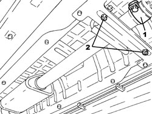
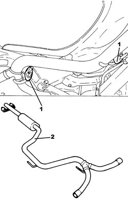

1076B30 FRONT EXHAUST SILENCER - R + R
- Path
- Procedures > 10 ENGINE > 1076 EXHAUST PIPES AND SILENCERS > 1076B EXHAUST PIPES AND SILENCERS > 1076B30 FRONT EXHAUST SILENCER - R + R
- Kind
- repair procedure (removal / refitting; the operation number is the code)
- Applies to
- engines: 2.2 JTS; all production periods
- Interactive page
- https://sloeber94.github.io/elrnDB-aBrrSpdr/en/#/946001959
Applies to: engines: 2.2 JTS; all production periods
 Removing
Removing
 Refitting
Refitting- Position the vehicle on a lift.
Op. 1076B22 REAR EXHAUST SILENCERS - LEFT OR RIGHT - R.R.
1. Loosen the collar securing the front exhaust silencer to the intermediate exhaust pipe.
2. Undo the nuts fixing the front exhaust silencer front flexible mountings to the mounting bracket.

Applies to: engines: 2.2 JTS; all production periods
1. Support the front exhaust silencer appropriately and release it from the flexible mountings.
2. Remove the front exhaust silencer.

Applies to: engines: 2.2 JTS; all production periods
Refitting
Removing- Place the exhaust silencer in its housing and secure to the flexible supports.
- Tighten the nuts fixing the front exhaust silencer front flexible mountings to the mounting bracket.
- Tighten the collar securing the front exhaust silencer to the intermediate exhaust pipe.
Op. 1076B22 REAR EXHAUST SILENCERS - LEFT OR RIGHT - R.R.
- Remove the vehicle from the lift.